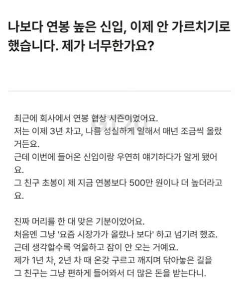
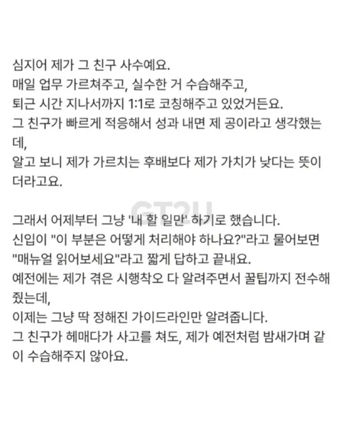
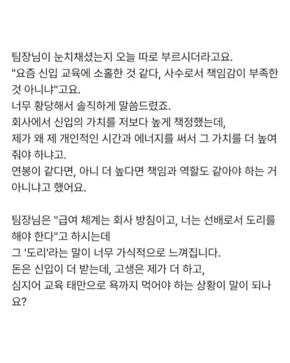
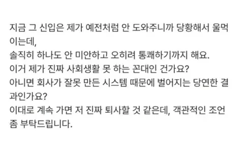

최대한 빨리 이직 해야지
능력되면 꼬이직이긴해 회사에 정말 필요한 사람이면 신입보다 안줄리가 없지 꼬이직 누칼협임 그리고 기술직 아니고서는 대부분의 회사 업무는 몇개월~1년 정도 적응하다보면 그놈이 그놈임 나는 걍 업무지원팀인데 우리 부서에도 7년차 연대 나온 사람이랑 4년차 초대졸인 사람 같이 있는데 솔직히 업무 능력 자체는 다를 거 없음 지능이야 당연히 연대 나온 사람이 훨씬 높겠지만
업종따라 다르긴함. 대기업 사내하청으로 설계직 하던 입장에서 바로 옆이 타회사들이다보니 많이 봐왔었는데
연차 쌓일수록 할수있는 일 바리에이션 폭이 존나게 넓어짐. 근데도 회사에서는 잡아놓은 물고기는 별 신경안씀.
뭐 불만생겨서 나가? 그럼 경력직 하나 데려오지 하고 말거든 어차피 돈 더줘야되는거 쟤 나갈때까지 더 써먹고
그때되서 돈 더주고 딴놈 고용하고 말지 이 마인드임.
근데 어지간히 큰 업체가 아닌이상 저지랄 몇번하다가 회사 걍 터지는경우가 많긴함.
저거 잘 못하면 신입과 사수 둘 다 나감 ㅋㅋㅋ
연봉인상률도 좆만한데 "키워놓으면 떠난다" ㅇㅈㄹ
신입연봉이 경력연봉 보다 높다?
회사가 ㅂㅅ이고, 물흐리는거지 뭐.
그래놓고 교육 잘 해주길 바란다는건 에바같음ㅋㅋ
나가라는거지뭐
꼬우면 이직해
좆소에서 퍼져있으면 이과장 되는거임ㅋㅋ
걔는 유튜브라도 하지
빠르게 인수인계하고 이직했음
꼬우면 이직하던가 연봉협상서 개아리 틀던가 해야지
저거 대기업 다녀도 똑같던데.. 신입공채 출신 아니고서야..
답은 공기업이구나(O)
그만둬
진짜 열받겠다
학벌차이나나?
스윗쉰포티 사장한테 저 비슷한거 당해봐서 저런거 알게되면 일못함 ㅅㅂㅋㅋㅋ
저건 이직해야됨.
3년~5년차면 이직하기 제일 좋은 연차임
이직하란 얘기지 ㅋㅋㅋ
직급별 연봉 체계도 없는 병신같은 회사가 어딨어?
의외로 있음
회사도 팀장도 둘다 개새끼들이네
그냥 이직이 답 이지뭐 회사가 좆 같은데 연봉 협상때 어필 해서 반영 안해주면 이직 해야지 다른 방법 있겠나
저런거 때문에 괜히 기분 만 잡치고 서로 관계도 어색해지고 하니까 연봉 같은거 오픈 하지 말라고 그렇게 얘기 하는데
굳이 그걸 물어보고 빨간약 먹은거 마냥 충격 받냐....
난 오히려 이거 보고 더 오픈해야한다고 생각함
사장이란 놈이 걍 헐값에 고급인력들 부려먹을라고 공개하지 말란거 아녀? ㅋㅋ
이게맞긴함 ㅋㅋㅋ 나도 후배월급보고 충격받았어 애가 실수로 켜놨다가..
누군가 나에게 이유없이 ㅈ같이 군다면
그 이유를 하나쯤은 만들어 줘도 되지
이직해야지 가스라이팅당하지말고
보통 저런 경우는 ....
회사가 애매할때 입사함 (회사가 애매하니 조건 별로 안 따지고 채용됨)
-> 일 못하는건 아닌데 뭐 대단히 똘똘하진 않음 -> 연봉 인상 미적지근함
-> 그 사이에 회사가 꽤 성장함 -> 이제 회사의 위상이 더 나아졌으니 좀 스펙 되는 신입들 뽑기 시작함 -> 당연히 그 스펙만큼 다른 회사들이 주는 수준 맞춰줘야 하니까 신입이라도 연봉 높음 -> 기존 애매한 직원들 연봉이 역전당함
이 케이스가 대부분인데 역전 당하는 입장에선 ㅈ같겠지
근데 보통 뛰어났다면 짬만큼 대우 받는게 대부분 (물론 아닌 경우도 많음)
오래되가지고 인상분이 구려서 그래 라떼는 120만으로 스타트였는데 요새는 200으로 스타트더라 나도 인상 매년해줬는데 120에서 인상분 200에서 인상분 시작점이 다르자너...중견이라 3천명이넘는데도 그럼...
저런 곳은 연봉 협상 개인으로 안해서 그 애매한 타임에 들어간 사람이면 유능하든 뭐든 딱히 의미 없고 역전당하게 되어있음.
신입이 사수 신입때 보다 많이 받으면 뭐 많이 받네 하겠지만
지금 보다 많이 받으면 좀 그렇긴 할듯
회사가 내인생을 책임져주지 않는다
저건 바로 찾아가서 쇼부봐야지 어차피 저러면 일 못해
신입하고 연봉 똑같은 애들이 다 나가야지 사실상 회사가 나가라고 말하는거랑 다름이 없음.
그러게 연봉 공개를 왜 하니..
사수 되서 가르쳐본 사람은 알거임 ㅋㅋ 한명 더 들어와서 그놈 가르치면 2인분이 아니라 거의 2.5~3인분 해야하는것 만큼 힘듬
why? > 나 혼자 하면 그냥 원래 내가 하던대로만 하면 되는데 부사수 있으면 이새끼 똥싸는지 확인해야하고 똥싼거 치워줘야하고 이새끼가 나몰래 구석에다 싸놓은 설사에 대해서는 내가 욕먹음 ㅋㅋㅋ